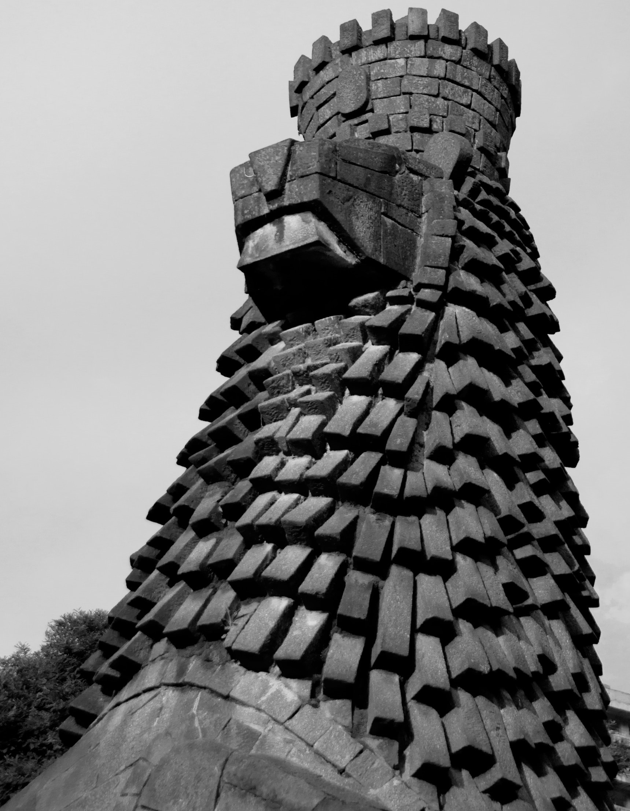
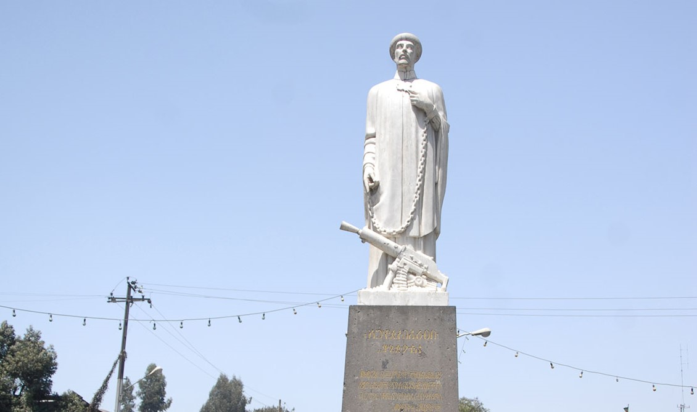

Explore top attractions, find hidden gems, and get insider tips on the
best restaurants, hotels, and activities. Immerse yourself in the
vibrant culture and history of Addis Ababa with our user-friendly and
comprehensive app. Enhance your travel experience and make the most of
your visit to this captivating city.
WELCOME TO
HISTORIC TREASURES
Discover Addis Ababa's Heritage Sites
Immerse yourself in the vibrant history of Addis Ababa as you
explore its iconic landmarks, such as the UNESCO-listed Holy Trinity
Cathedral and the ancient ruins of Entoto Maryam Church. Marvel at
the ancient artifacts in the National Museum and stroll through the
bustling Merkato Market, Africa's largest open-air market.
Experience the rich heritage and architectural wonders of Addis
Ababa's past, each site offering a unique glimpse into Ethiopia's
captivating history.
Map
A tour guide map with suggestions allowing users to effortlessly
navigate the city's streets and attractions.
This is a place where you can get details about heritage sites
in Addis and information about them
Recommendation
In this section you can get best sites with estimated day and
cost based on their proximity
Must seen Site
Any tourist who landed in Addis must see those land marks even
in short time of period
Mobile app
A mobile application with detail information about heritage sites in Addis Ababa
Mobile app
A mobile application with detail information about heritage sites in Addis Ababa

St George Church
Addis' Piazza cathedral, commissioned by Emperor Menelik II,
commemorates his victory at Adwa. The interior dazzles with
colorful art, while the exterior is grey stone. The church's
ceiling and inner shrine walls feature stunning paintings
and mosaics by Afewerk Tekle. Built in 1911, the octagonal
church blends neoclassical style with contributions from
Greek, Armenian, and Indian artists. Empress Zewditu and
Emperor Haile Selassie were crowned here in 1916 and 1930
respectively.
Ras Birru Residence
The Amharigna on the gates reads "Ras Birru", who was the
owner of this house a long time ago. The building dates back
to the 1880's and is now the Addis Ababa Museum. Really nice
place that unfairly gets a rough ride because it's not fancy
like other Museums in the world. Ras Biru's House, a stone
masonry-timber building (note the knee-braces) and the
double arches on the door way. It now documents Addis
Ababa's history.
Abune Petros Statue
Abune Petros, born in 1892 in Fiche, Ethiopia, became a monk
at 24 after taking the Ethiopian Orthodox Church oath. Known
for his insightful teachings, he was appointed a bishop in
1928 with the name Abune Petros. During Italy's invasion in
1932, he accompanied Emperor Haile Selassie to the northern
front, aiding the wounded, praying, and preaching.
Tragically, he was executed on July 29, 1936, by Italian
Fascist forces for publicly condemning colonialism and
invasion.

Lion Of Judah
Located near the National Theater, this monument
commemorates Emperor Haile Selassie's Silver Jubilee in
1955. The Emperor commissioned the monument to symbolize
Africa's progress into modernity. Architect Henry Shomet
recommended sculptor Maurice Calka, whose work embodied
radical modernity. It presents a contemporary interpretation
of the original Lion of Judah statue and remains a symbol
used by the Ministry of Culture and Tourism.
Itegue Taitu Hotel
A historic hotel established in 1898, which is Ethiopia's
first hotel in the vibrant city center of Piazza. With
stunning views and a cool breeze, it's conveniently located
near the airport, Sheraton International Hotel, and UNECA.
Enjoy comfortable rooms, a bar, a restaurant with live jazz
music, and other amenities, all in a charming and friendly
atmosphere.